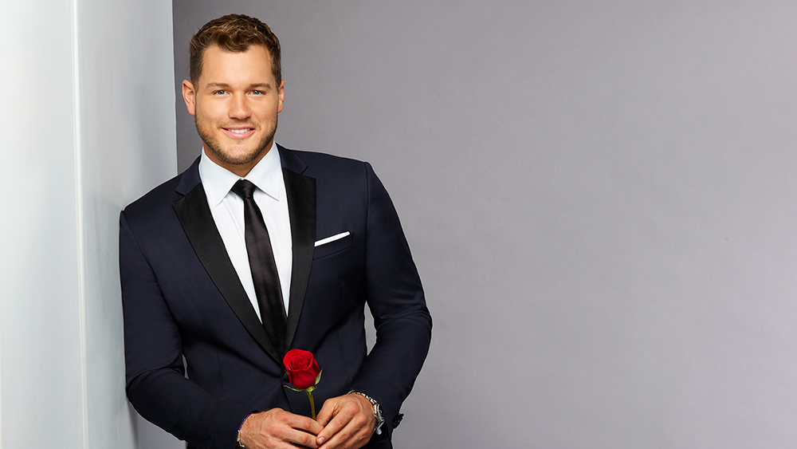

At long last, it was time to learn the final outcome of this extremely dramatic season of "The Bachelor." We watched Colton knock on Cassie's hotel room door and she seemed surprised, yet happy to see him. He asked her to take a walk downstairs so they could sit outside and talk. He told her that he "sacrificed and gave up everything." Cassie said, "Sacrificed everything...what?" Her eyes were like saucers and she gasped when he told her. He said he could have gotten everything he wanted with both of the other remaining women, but it wouldn't be with who he wanted. Colton said he just wanted to take their relationship day by day.
Cassie had a hard time forming a sentence for a bit and then said that she was worried that what they felt on the show might not be real. She wanted to be sure about what she felt without the pressure of the show. She said that she was worried that he would resent her in the future, and Colton said that compromise and sacrifice are just part of loving someone. He told her he is 100 percent sure that he loves her and he wants to show her that. She smiled and kissed him! Then, he told her about his fence jumping episode and she thought that was hilarious. He asked her if she would meet his family, and he said they are waiting in Spain if she wants to continue. Cassie said yes! She added that she doesn't know what she's ready for but that she felt good at that moment.
Colton and Cassie headed to Mallorca, Spain to meet his family. Anyone else wonder what Cassie's dad was thinking as this was going on? Colton met up with his family first and told them the whole shocking story about what has happened so far and why they are only meeting one woman. He told his family that he was no longer a virgin, but then quickly said he was just kidding. He was very honest in telling them that he is in love with Cassie and that she isn't quite there in her feelings for him. He's hoping that this week in Spain helps prod that along. Cassie had a major freak out session going into meeting them and she worried about the situation not being what they expected.